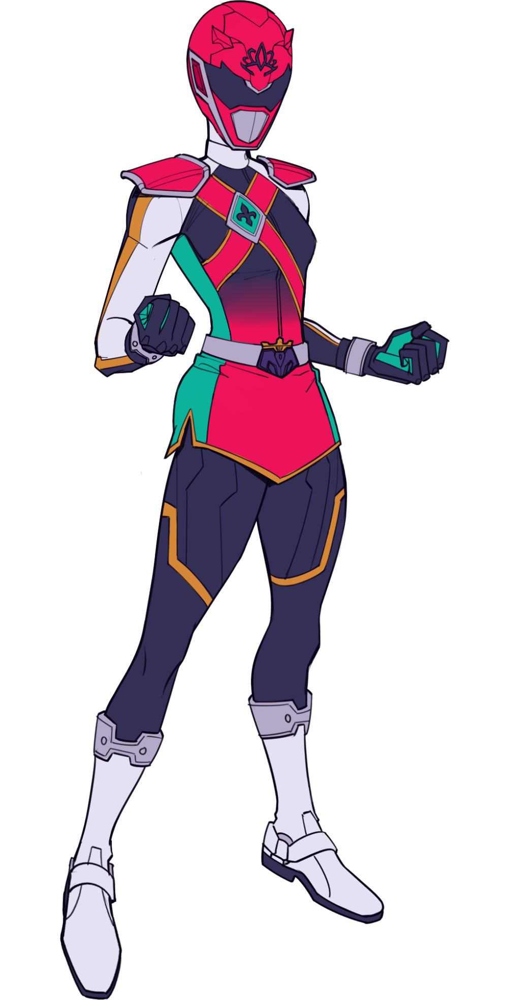

One would assume that drawing a line from the flying heiress and the flying member of Starlit 7th would be obvious, but no one seems to make the connection. It's probably due to the fact that Riasa seems like an airhead and the Starlit Pasha is a hero of justice and sees smiting evil as her purpose in life. The brutality of Pasha is such to make none think the genteel Riasa could the same person, a boon for someone who couldn't actually keep a secret to save her life. The Starlit Pasha uses the Sovereign Knives, a set of stilettos designed for throwing.